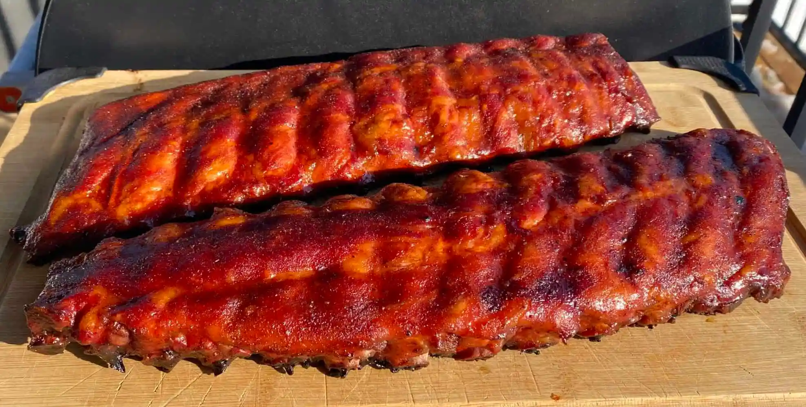

Baby Back Ribs

Description
Baby back ribs come from the parts of the ribs that are connected to the backbone,
beneath the loin muscle, and are curved where the meet the spine.
They're called “babies” because they're shorter than spare ribs;
on the longest end, they're around 6 inches, and they taper down to about 3 inches
on the shorter end.
This rib recipe is sweet and savory. It is smoked on a pellet grill using hickory wood.
Ingredients
- Baby Back Ribs
- Meat Church's Honey Bacon BBQ
- Meat Church Dia de la Fajita
- 1 cup of apple cider vinegar for spritzing
- 1 bottle of squeeze butter or 5 pats of butter
- 1 cup of brown sugar
optional
- Your favorite BBQ Sauce.
- Pepper jelly
Steps
- Prepare your smoker at 275 degrees. We recommend hickory wood for this smoke. Flip the ribs meat side down and remove the membrane off the back of the rack. This is very easily accomplished by grabbing the membrane with a paper towel and pulling it off. Removing the membrane will allow your rub to penetrate into the meat more effectively. Apply a light coat of our Fajita rub to the bone side. Then come back across it with our Honey Bacon BBQ Rub. Allow the rub to adhere for 15 - 30 minutes. Flip the ribs over. Repeat the process. Cover the meat 100%. Allow it to fully adhere for another 15 - 30 minutes. Tip: I would allow 30 minutes per side if time allows. No longer.
- Place the ribs meat side up in the smoker. Spritz the ribs with apple cider vinegar one time at about 90 minutes - 2 hours into the cook.
- Smoke the ribs until you get to a beautiful mahogany color. This will take 2 - 2.5 hours max depending on the size of your ribs. The visual queue is most important. Get ready to wrap when you have achieved the beautiful color you desire. Wrap the ribs in aluminum foil to protect that perfect color. Lay out 2 long pieces of aluminum foil. Create a bed with 1 handful of brown sugar and a heavy bead of butter or (5-6 pats)on the foil. I also love to pour a bead of Texas Pepper Jelly across this mixture. Some folks use a hot sauce instead. Lay the ribs meat side down on the sweet concoction with the meat side down\bones up. Return the ribs to the smoker and continue to cook until meat has started to pull back. You are looking for an internal temp of 203 - 205. This typically takes 90 mins or so depending on the size of the ribs. Remove the ribs from the foil and sauce or glaze them at this point. We use a mix of 3:1 mix of our favorite BBQ + Texas Pepper Jelly Rib Candy. TPJ has a lot of great flavor options (Apple n Brown Sugar or Peachy Peach). Feel free to make this recipe your own by choosing sauces you love.
- It is only necessary to leave the ribs on the cooker for 10 minutes to set the sauce. This will keep the bbq sauce from running down your face. I love to sauce in the foil boat on the pit to keep the pit clean.
- Remove the ribs from the smoker. Allow to sit for a few minutes. Then slice and enjoy!